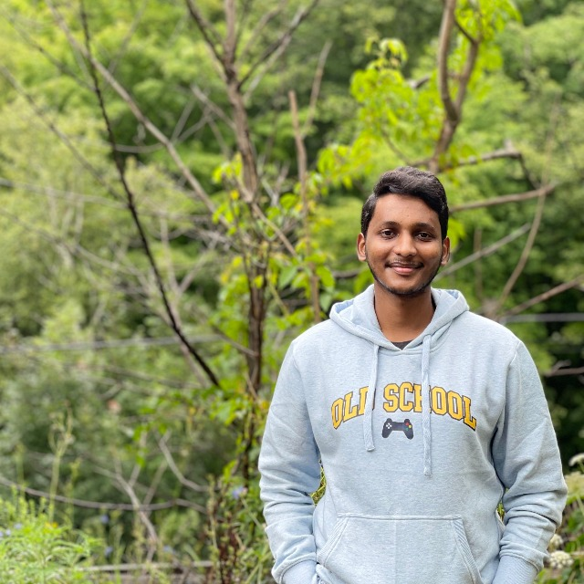

Janakiram Gupta: Web Developer

Hello! I’m Janakiram Gupta, and it's a pleasure to meet you. I have a background in front-end development with more than 4 years of experience in developing web applications, Responsive Web Design and applications to target Desktops, Mobiles and Tablets for almost all platforms. Before that, I got my bachelor’s degree in computer science. After graduation, I worked for a small start-up AutoRABIT as an Associate Software Engineer and soon found myself specializing in front-end development. Later I started working as a Software Product Developer for OpsRamp that provided cloud monitoring solutions. I was majorly involved in developing reusable components to support existing product development and in transforming User Experience for the product. Currently I’m a student at Lambton College where I’m studying for my master’s degree in Mobile Application Design and Development. Throughout my work experience, I have been relied upon as the one with detail-oriented and hard-working. Thanks for your time.I have always wanted to work in a sustainable environment, and I’d be thrilled if you could consider me for any open positions.
Hobbies and Interests: